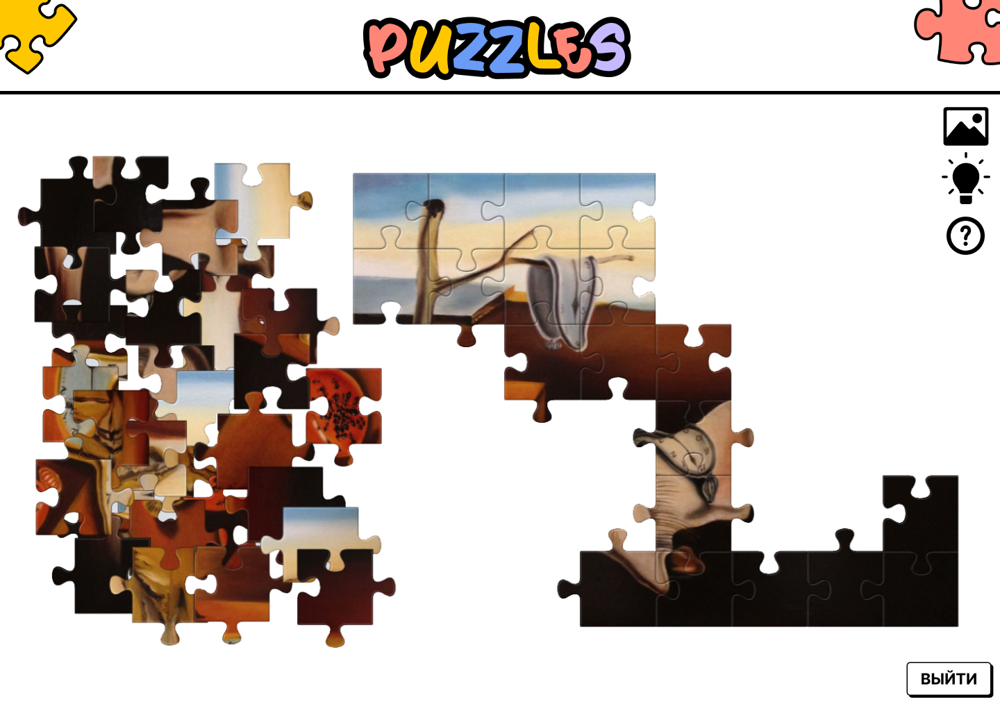

Сведения о системе
Пазл (или мозаика) – это игра-головоломка, в которой необходимо собрать одну картинку из множества фрагментов различной формы. Слово "пазл" переводится с английского как "загадка" или "головоломка"
- Авторизация и запуск программы
- Вкладка "Сохранённые игры"
- Вкладка "Категории"
- Вкладка "Уровни сложности"
- Вкладка "Рейтинг"
- Вкладка "О системе"
- Вкладка "Настройки"
- Игра
Авторизация и запуск программы
При запуске программы, пользователь вести логин и пароль и нажать кнопку «Войти» или «Регистрация», после чего система должна выполнить вход, либо же зарегистрировать нового пользователя
Вкладка "Сохранённые игры"
После входа в систему откроется вкладка «Сохранённые игры», где будут храниться все пазлы, которые пользователь не закончил собирать. В нижнем правом углу у каждой картинки отображен уровень сложности для данной игры. Если у пользователя сохранённых игр нет или он только зарегистрировался в системе, то во вкладке «Сохранённые игры» будет надпись: «Сохранённых игр нет»
Вкладка "Категории"
В данной вкладке все картинки распределены по категориям. После выбора конкретной категории, пользователь может выбрать интересующий его пазл из возможных картинок данной категории

Вкладка "Уровни сложности"
Во вкладке «Уровни сложности» игрок может выбрать пазл, исходя из необходимого ему уровня сложности. Переключаться между уровнями можно через специальные кнопки над картинками

Вкладка "Рейтинг"
Во вкладке «Рейтинг», пользователь может изучить список из 10 игроков, занимающих лидерские позиции
Вкладка "О системе"
При нажатии на кнопку «О системе», система откроет информацию по данному приложению
Вкладка "Настройки"
При нажатии на кнопку «Настройки» система откроет окно, где игрок может включить/выключить звук или музыкальное сопровождение, а также прочитать всю интересующую его информацию об разработчиках игры
Игра
Для начала игры необходимо выбрать картинку (она подсветится зелёным), а затем нажать кнопку «Играть». После этого, система откроет игровое поле
Игровое поле с типом сборки «на ленте»
Игровое поле с типом сборки «в куче». При данном типе сборки, пользователю необходимо искать подходящие друг к другу фрагменты
Игровое поле с типом сборки «вперемешку». При данном типе, игрок должен выбрать два фрагмента, которые он хочет поменять местами. При правильной сборке фрагменты склеиваются
Для того, чтобы увидеть исходную картинку, необходимо нажать на иконку «Картинка» в правом верхнем углу
Взятие подсказки происходит следующим образом: пользователь нажимает на иконку «Подсказка» в правом верхнем углу, затем система подсвечивает фрагмент и место, на которое он должен встать зелёным цветом. Пользователю необходимо перенести данный фрагмент с ленты на подсвечиваемое место
При нажатии иконки «Знак вопроса», система откроет пользователю страницу с информацией о данном приложении